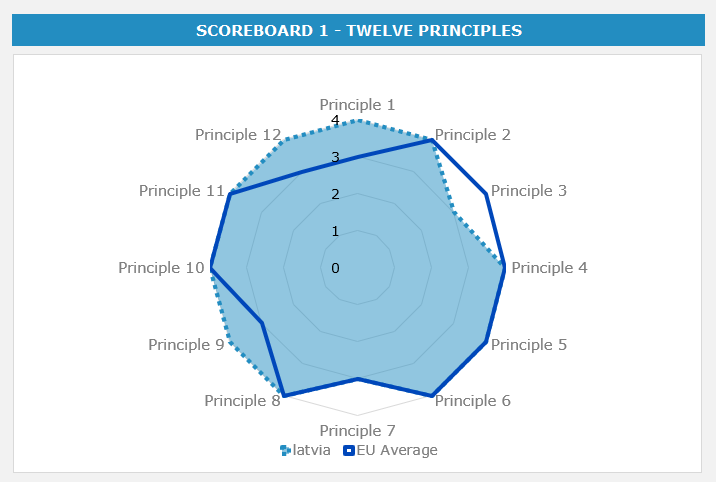
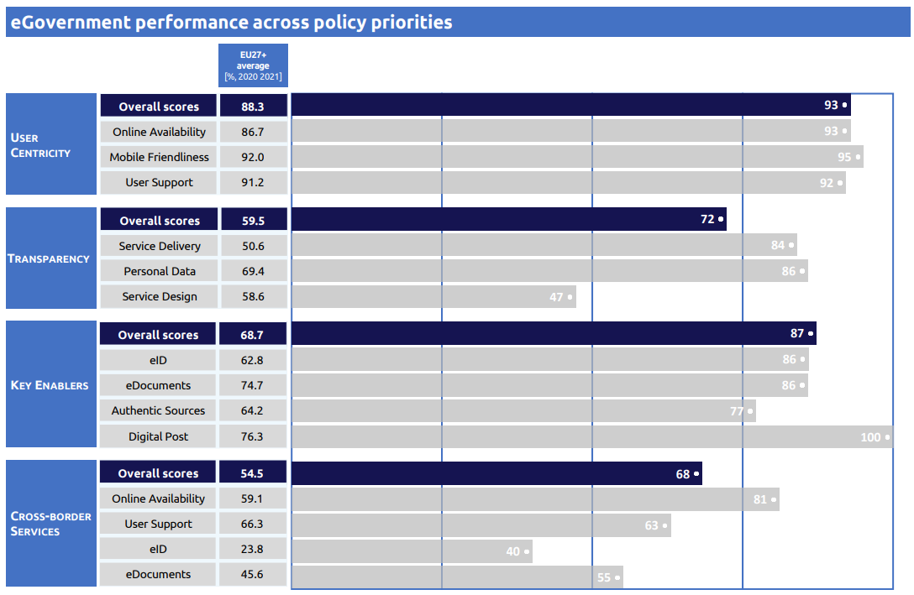

Digital Public Administration factsheet 2021
Latvia
Table of Contents
Digital Public Administration factsheet 2022
2 Digital Public Administration Highlights 10
3 Digital Public Administration Political Communications 12
4 Digital Public Administration Legislation 19
5 Digital Public Administration Governance 28
6 Digital Public Administration Infrastructure 31
7 Cross border Digital Public Administration Services for Citizens and Businesses 40
Country
Profile
1
Country Profile
Digital Public Administration Indicators
The following graphs present data for the latest Generic Information Society Indicators for Latvia compared to the EU average. Statistical indicators in this section reflect those of Eurostat at the time the Edition is being prepared.
Percentage of individuals using the Internet for interacting with public authorities in Latvia | Percentage of individuals using the Internet for obtaining information from public authorities in Latvia |
Percentage of individuals using the Internet for downloading official forms from public authorities in Latvia | Percentage of individuals using the Internet for sending filled forms to public authorities in Latvia |
Interoperability State of Play
In 2017, the European Commission published the European Interoperability Framework (EIF) to give specific guidance on how to set up interoperable digital public services through a set of 47 recommendations. The picture below represents the three pillars of the EIF around which the EIF Monitoring Mechanism was built to evaluate the level of implementation of the EIF within the Member States. It is based on a set of 71 Key Performance Indicators (KPIs) clustered within the three main pillars of the EIF (Principles, Layers and Conceptual model), outlined below.

Source: European Interoperability Framework Monitoring Mechanism 2021

Source: European Interoperability Framework Monitoring Mechanism 2021

Source: European Interoperability Framework Monitoring Mechanism 2021

Source: European Interoperability Framework Monitoring Mechanism 2021
eGovernment State of Play
The graph below presents the main highlights of the latest eGovernment Benchmark Report, an assessment of eGovernment services in 36 countries: the 27 European Union Member States, as well as Iceland, Norway, Montenegro, the Republic of Serbia, Switzerland, Turkey, Albania and Macedonia (referred to as the EU27+).
The study evaluates online public services on four dimensions:
- User centricity: indicates the extent to which a service is provided online, its mobile friendliness and its usability (in terms of available online support and feedback mechanisms).
- Transparency: indicates the extent to which governments are transparent about (i) the process of service delivery, (ii) policy making and digital service design processes and (iii) the personal data processed in public services.
- Cross-border services: indicates the extent to which users of public services from another European country can use the online services.
- Key enablers: indicates the extent to which technical and organizational pre-conditions for eGovernment service provision are in place, such as electronic identification and authentic sources.
The 2022 report presents the biennial results, achieved over the past two years of measurement of all nine life events used to measure the above-mentioned key dimensions. More specifically, these life events are divided between seven ‘Citizen life events’ (Starting a small claim procedure, Moving, Owning a car, Health measured in 2021, and Career, Studying, Family life, measured in 2020) and two ‘Business life events’ (Regular Business Operations, measured in 2021, and Business start-up, measured in 2020).

Source: eGovernment Benchmark Report 2022 Country Factsheets

Digital Public Administration Highlights
2
Digital Public Administration Highlights
Digital Public Administration Political Communications |
Digital Public Administration Legislation |
In December 2021, the Cabinet of Ministers approved the informative statement regarding the implementation of the open data portal, according to which, statement public sector institutions must publish their respective data on the portal. In addition to that, the Ministry of Environmental Protection and Regional Development in partnership with other public sector institutions will publish and update a list of datasets that would be suitable for opening in the future.
| Digital Public Administration Governance |

No recent update has been identified in this field to date.
Digital Public Administration Infrastructure |

Digital Public Administration Political Communications
3
Digital Public Administration Political Communications
Specific political communications on digital public administration
Berlin Declaration on Digital Society and Value-Based Digital Government
Digital Transformation Guidelines 2021–2027
The Digital Transformation Guidelines 2021–2027 entered into force in July 2021. The document continues the digitalisation policy set out in the ‘Information Society Development Strategy 2014–2020’. The new digital strategy defines priority axes for action, also for the digital transformation of the economy. The government platforms, processes and services are an integral part of the national digital infrastructure. In addition, data should become integrated assets to further stimulate the development of the digital economy, with open government digital platforms becoming catalysts in particular for the digitalisation of small and medium-sized enterprises (SMEs).
The guidelines indicate five lines of action and cover all key aspects of the digital societal breakthrough: (i) digital skills and education; (ii) digital security and credibility; (iii) access to telecommunications and services; (iv) digital transformation of the economy (including public administration); and (v) information communication technology innovation, and commercialisation industry and ICT science.
Report on a New Public Administration Services System Provision
Public Service Development Plan 2020–2023
On 4 February 2020, the Cabinet of Ministers adopted the ‘Public Service Development Plan 2020–2023’ that strengthens personalised and innovative public administration services. The plan implements a number of fundamental changes in the provision of public services: promoting proactive instead of reactive service provision; user-oriented services according to the needs of citizens and businesses; an integrated approach in service design and provision; cross-border services instead of national oriented services; and, the provision of digital public administration services.
Interoperability
Conceptual Architecture of Public Administration Information Systems
On 10 March 2015, the Cabinet of Ministers approved the Conceptual Architecture of Public Administration Information Systems. The Conceptual Architecture is developed in accordance with the enterprise architecture modelling approach, covering processes (organisation), information (data), applications (systems) and technology (ICT infrastructure) aspects of public information systems. The Conceptual Architecture defines the long-term vision for the development of public administrations and public service infrastructures, and consists of 40 recommendations, including references to more particular reusable platforms, services and reference models. On 7 January 2018, the Cabinet of Ministers adopted an Informative Statement on Progress in the implementation of the Conceptual Architecture. In addition to the progress report, which describes the implementation of recommendations and particular shared platforms, it contains the National Interoperability Framework document as an Annex. The purpose of the informative statement is to better align the contents of the Conceptual Architecture with the European Interoperability Framework (EIF).
Key enablers
Access to public information
Fifth National Action Plan 2022-2025
On 10 February 2022, the Cabinet of Ministers approved the Fifth National Open Government Action Plan 2022-2025 to contribute to foster a global culture of open government within the Open Government Partnership. The plan sets out concrete steps across a broad range of issues and aims to facilitate open governance in order to take advantage of openness, accountability and public participation facilitated by digitalisation and innovation.
National Open Data Strategy
The strategy shall apply to public administrations, authorities under their responsibility and supervision, local authorities, as well as legal and natural persons of private law (hereinafter referred to collectively as ‘authorities’) to which the performance of public administration tasks has been delegated, to the extent of the delegation. In particular, the strategy covers all public administrations, including economic operators, associations and foundations, which perform public sector tasks on a public mission and directly relate to specific delegated public administration tasks.
eID and Trust Services
Electronic Identification Cards
On 15 October 2020, representatives from all three Baltic countries participated in the informal meeting for the Ministers for Telecommunications and Digital Policy. During the meeting, the Baltic countries presented their joint vision for the digital transformation of the EU, highlighting the role of a universally recognised eID solution as a key enabler to facilitate the development of the single digital market and for the provision of services in the public and private sectors.
Security aspects
- Reducing cybersecurity risks;
- Developing national cyber defence capabilities;
- Ensuring security of ICT infrastructure, information systems and services;
- Raising public awareness of cybercrime; and
- Continuing the fight against cybercrime.
The cybersecurity policy defines the following priorities: protection, deterrence and development.
Interconnection of base registries
Modernisation of the Natural Persons Data Service
In 2018, the Office of Citizenship and Migration Affairs launched the Modernisation of the Natural Persons Data Service project (No. 2.2.1.1/17/I/006) of the European Regional Development Fund. The project has several objectives:
- Ensuring a uniform and centralised registration and recording of foreigners by the public administration;
- Opening Latvia’s electronic environment to foreigners, providing the possibility for foreigners to use the eServices provided by the public administration;
- Facilitating the management and certification of personal status; and
- Ensuring the availability of information on the status of the eAddress to a natural person, i.e. ensuring the integration with the eAddress system; ensuring the inclusion of information on the official eAddress account in the Population Register Information System; fostering the development of the Population Register Information System with a view to ensuring the quality of information required for the 2021 population census programme; and carrying out annual population assessments to support the preparation, organisation and performance of the 2021 census.
One of the activities of the project was the development of the Information System for the Register of Natural Persons, which was based on the Population Register extended to foreign nationals who enter into legal relations with the State. The Register of Natural Persons was developed and is available in production since 28 June 2021. It was developed in accordance with the provisions of the law on the Register of Natural Persons and has replaced the old system of the Population Register since 28 June 2021.
eProcurement
Integrated Electronic Procurement System
On 4 September 2012, the Cabinet of Ministers approved the Informative Statement on the need to develop an Integrated Electronic Procurement System (EPS).
The envisaged functionality of the EPS included the following elements: (i) development of the EPS platform (the portal), development of a common user registration and authentication solution based on the national information system integrator, integration of the existing eCatalogue system; (ii) use of the eCertificate subsystem to reduce the administrative burden on suppliers and shorten the time of actual procurement procedures; (iii) the eAuctions subsystem; and (iv) use of the eTenders subsystem to standardise the contracting processes and the documentation to be prepared for procurement, ensuring the availability of information.
Domain-specific political communications
No political communication has been adopted in this field to date.
Emerging technologies
Artificial intelligence (AI)
National Artificial Intelligence Strategy
The informative statement ‘On the Development of Artificial Intelligence Solutions’ sets out a future national policy on the use of AI solutions and defines the way forward in promoting their use over the following three years. The informative statement entrusts ministries with identifying the areas in which AI can be exploited for the automation of public administration tasks. The report includes further actions:
- Promoting AI in education and science;
- Making data available;
- Using AI in the public sector;
- Promoting the adoption of AI in the economy;
- Actively engaging in international cooperation; and
- Integrating automation and AI in all sector strategies.
Distributed ledger technologies
Blockchain Informative Statement
Prepared on 16 June 2020, a new informative statement was approved by the Cabinet of Ministers to support the further development of a blockchain-based solution for eInvoicing and eReceipt processes performed by the State Revenue Services. The introduction of digital public services that reduce the bureaucratic burden on businesses and enhance the level of trust and transparency by limiting the amount of paper documentation are actions taken by the Ministry of the Economy under the overarching ‘Zero Paper Economy’ (ZPE) initiative, supporting entrepreneurs and SMEs in particular. The ZPE facilitates the use and development of digital services for businesses and enhances the shift towards digital technologies. This initiative has helped shaping the digital agenda of the Ministry of the Economy and taking action towards processes that will raise the level of basic digital skills for employees, educating senior level management on modern technologies (AI, 5G, blockchain) and improving the level of digitalisation in SMEs and in the public sector.
Big data
No political communication has been adopted in this field to date.
Cloud computing
Declaration ‘Building the Next Generation Cloud for Businesses and the Public Sector in the EU’
Internet of Things (IoT)
No political communication has been adopted in this field to date.
High-performance computing
European High Performance Computing Joint Undertaking - EuroCC
High-speed broadband connectivity
Electronic Communications Sector Development Plan for 2021–2027

Digital Public Administration Legislation
4
Digital Public Administration Legislation
Specific legislation on digital public administration
Regulation for the Public Administration Services Portal
On 4 July 2017, the Cabinet of Ministers approved the Regulation for the Public Administration Services Portal (hereinafter – the portal), which governs public services and the implementation of the one-stop-shop principle. The regulation determines the manager of the portal, his/her duties and responsibilities, the duties and responsibilities of the institution, the procedure for the use and management of the portal, the procedure for the service catalogue and the information included therein.
This regulation prescribes:
- The use and management arrangements of the portal;
- The duties and responsibilities of the portal keeper, as well as the national governing body’s (hereinafter – the Authority) duties and responsibilities; and
- The procedures for the exchange of information between the portal manager and the Authority.
Several regulations govern the procedures for updating information in the portal to improve the availability and use of eServices.
Registration, Quality Control and Procedures for the Provision of Public Administration Services
The three main regulations that govern eServices are:
- Cabinet Regulation No. 399 on the registration, quality control and procedures for the provision of public administration services. This regulation governs the registration of public administration services, quality control and the procedures for the provision of public administration services;
- Cabinet Regulation No. 401 on the State and Municipal Customer Service Centre, as well as the types, range and procedures for the provision of public administration services. This regulation governs the administration of the State and Municipal Customer Service Centre, as well as the range, types and the procedures for the provision of public services; and
- Cabinet of Ministers Regulation No. 402 on public administration services digitalisation. This regulation prescribes the procedures for the digitalisation of public services and how to ensure the availability of public services.
Interoperability
No legislation has been adopted in this field to date.
Key enablers
Access to public information
Law on State Information Systems
New amendments to the Law on State Information Systems expanding the scope of the law and introducing the concept of opening government ICT platforms for commercial services providers are at the stage of public consultation and are planned to be accepted by government and adopted by Parliament by the end of the year 2021.
Adopted in May 2002 and with amendments up to 2014, the Law on State Information Systems aimed at ensuring the availability and quality of information services provided by State and local government institutions in the State information systems. The law determines unified procedures, by which State information systems are created, registered, maintained, used, reorganised or closed. It regulates the cooperation between State information system managers, determines the functions of the maintainer of the State information system and the rights and duties of the State information system data subject. Finally, it regulates the security management of the State information system and specifies the requirements for the protection of critical State information systems and State information system management integrators.
Freedom of Information Law
On 14 July 2020, the Cabinet of Ministers approved amendments to the Regulation of the Cabinet of Ministers No. 445 on the Procedures for Publishing Information on the Internet by Institutions. The regulation envisages the publication of open data at the public administration’s disposal in a machine-readable format jointly with metadata or dataset metadata, only in the Latvian Open Data Portal.
The Freedom of Information Law, amended on 12 June 2009, transposed the Directive on the re-use of public sector information (2003/98/EC) into national law. According to the amendment, an application for the re-use of existing information at the disposal of an institution shall be drawn up in writing, in accordance with the documentation requirements specified for the relevant information group. In addition, the application shall indicate that the information is requested for the purpose of re-use as well as the goods or services for which the requested information is necessary. The law also states that information re-use conditions shall not be imposed. Since 6 October 2015, new amendments to the Freedom of Information Law have entered into force. The amendments transpose Directive (EU) 2013/37 on the re-use of public sector information.
Open Data
On 21 December 2021, the Cabinet of Ministers approved an informative statement on the implementation of the ‘Open by Default Principle’. According to the statement, public sector institutions - who are the data owners mentioned in Annex one - have to open their respective data and publish them on the Open Data Portal. Additionally, the Ministry of Environmental Protection and Regional Development, in partnership with other public sector institutions, has to publish and update a list of datasets that would be suitable for opening in the future.
Accessibility of the Websites and Mobile Applications
The Regulation of the Cabinet of Ministers No. 445 on the Procedures for Publishing Information on the Internet by Institutions, amended on 14 July 2020, transposes the Directive (EU) 2016/2102 of the European Parliament and of the Council of 26 October 2016 on the accessibility of the websites and mobile applications of public sector bodies. Information and digital services become more accessible to users, in particular for persons with disabilities and the elderly.
eID and Trust Services
Personal Identification Documents Law
From 1 January 2023, the electronic identification cards (eID) will be a mandatory identity document for Latvian citizens and non-citizens who have reached the age of 15 years, according to the amendments made to the Personal Identification Documents Law on 9 May 2019. With an identity card (eID):
- In which an authentication certificate is included and activated, users can verify their identity remotely – in the electronic environment, receive electronic public services at the national level and cross-border if the specific service provider has integrated the eIDAS gateway;
- In which a valid certificate of an electronic signature is included and activated, users can attach their electronic signature to electronic documents having the same force as physically signed documents;
- Users can verify their identity in presence by presenting the document to a person who must confirm their identity, legal status, age, etc.; and
- Users can travel within the European Union, countries of the European Economic Area and the Swiss Confederation.
Natural Person Electronic Identification Law
In 2021, the Ministry of Environmental Protection and Regional Development made amendments to the Law on Electronic Identification of Natural Persons that further strengthen the role of the State-provided eID means in the public and private sectors. According to the amendments:
- The State-provided eID means are included in the eID card and the mobile app eParaksts Mobile;
- In the Digital environment they are equal to presenting an identification document in person;
- The State-provided eID means are available free of charge for online service providers and citizens;
- They have to be recognised by other EU online services providers (according to eIDAS);
- National public online services providers will have to accept eIDs from other EU countries in their online services by 01.01.2023; and
- Private and public eService providers will have to accept national eIDs in their eServices by 01.02.2023.
eIDAS Review
At the beginning of 2021, the European Commission in partnership with the Member States began their work on the review of the eIDAS Regulation. In June 2021, the European Commission published the initial proposal that introduced the concept of the Digital Identity Wallet and the European digital identity. In order to ensure the timely implementation of the Digital Identity Wallet in 2021 the work on the legal text and on the technical architecture of the wallet started simultaneously.
Digital Transformation Guidelines for 2021–2027On 7 July 2021, the Cabinet of Ministers approved the Digital Transformation Guidelines for 2021–2027. One of the action points in the document is ‘Digital security and trust’ (see 4.2.) that focuses on online security, trust services and electronic identification, etc. The guidelines emphasise that a high level of trust and accessible and modern electronic identifications means by default do not automatically facilitate the uptake of these solutions in society and highlights the need for more actions to facilitate the use of State-provided electronic identification means and trusted services as well as the need to further develop the national legislation in this field. The guidelines also indicate a goal for the number of national eID and trust service users, set at 500 000 by 2027.Law on the Register of Natural Persons
The Law on the Register of Natural Persons will facilitate a unified way of registering foreign nationals who wish to receive public administration services in Latvia electronically, using the electronic identification issued by the Member State of the European Union, the State of the European Economic Area or the Swiss Confederation. The new Natural Persons Register has replaced the old Population Register and is operational as of 28 June 2021. The Law on the Register of Natural Persons has also entered into force on 28 June 2021.
Security aspects
Personal Data Processing Law
The Personal Data Processing Law came into force on 5 July 2018. The purpose of this Law is to create legal preconditions for the setup of a protection system for the personal data of a natural person at national level by providing for the institutions necessary for such purpose, determining the competence and basic principles of operation, as well as regulating the operations performed by data protection officers, and the provisions concerning data processing and free movement.
Law on the Security of Information Technologies
The Law on the Security of Information Technologies entered into force on 1 February 2011. It aimed to improve the security of information technologies by defining the key requirements for organisations to guarantee the security of essential electronic services. The law provided for the identification and protection of critical infrastructure, the establishment and organisation of an IT Security Incident Response Institution (national CERT), the conduct in case of information technology security incidents, the setup of minimum security requirements for State and municipal institutions and the implementation of Directive (EC) 2009/140 by electronic communications service providers.
Interconnection of base registries
Population Register Law
The purpose of the Population Register Law is to establish and maintain a single system for the registration and recording of natural persons, the Register of Natural Persons, in order to ensure the identification of natural persons and the processing of data which is performed by State institutions and officials.
Civil Registration Law
According to the Law On Registration of Civil Status Documents, the General Register Office is in charge of preparing, updating and renewing marriage, birth or death registry entries. A document confirming registration of a civil status document shall be issued on the basis of birth, marriage or death registry entries. Additional pieces of legislation are the Civil Law and the Regulations on Registers of Civil Status Documents and the Regulations on State Fees for the Registration of Acts of Civil Status.
The Civil Register does not provide any open data at the moment. However, other institutions can recover data from the registry via APIs. The Civil Register is connected to the Enterprise Register, the Social Information Systems, the Address Register and the Tax Register, among others.
Enterprise Register Act
The Enterprise Register Act and the Enterprise Register implement the registration of those entities as determined by law. This is done to establish their legal status and ensure the public reliability of information laid down in national laws and regulations (regarding the entities to be registered and the legal facts), as well as to ensure the accessibility of information provided by laws and regulations. An amendment to the law, announced in April 2017, established that the Enterprise Register should no longer be tied to any specific geographical location because it can be managed by any Enterprise Register branch. The amendment improved and simplified document circulation for the Enterprise Register and reduced the formalities for public users.
Additionally, legislation pertaining to the Enterprise Register can now be retrieved from the legal pages of the Enterprise Register website.
An amendment to the law, announced in November 2020, established that information on legal persons, including company officials, owners, beneficial owners, stored on 14 registers of the Register of Enterprises, will be publicly accessible online and free of charge on the Register’s information website. The public opening of the registers will result in the accessibility of up-to-date and historical information on over 650 000 legal persons (e.g. LLCs, JSCs, associations, etc.) and legal facts (e.g. commercial pledges, marriage contracts, etc.) from the commercial register, commercial pledge register, association and entity register and others (overall 14 registers and lists).
The register is also working on expanding the amount of information in open data format. Basic data on legal entities are already available in open data format. By the end of 2021, the Latvian government expanded the amount of information in the open data format, including information about true beneficiaries. The open data format is considered to be the most efficient way of processing and analysing information across borders.
Amendments made in 2021 improve the information system of the Enterprise Register by exchanging messages and documents with foreign registers through the system of registers’ interconnection, including various State information systems, commercial and company register.
Law on Vehicle Registration
The Law on Vehicle Registration states that the Vehicle Register contains the national inventory and ensures it is updated. State records include each vehicle, or the numerical identification records, technical data and information about its owner or holder. Additional pieces of legislation are:
- The Road Traffic Law;
- The Road Traffic Regulation (effective from 1 January 2016); and
- The rules on the point system applicable to traffic violations.
eProcurement
Public Procurement Law
The establishment of an eProcurement System and the transition to the electronic submission of applications and tenders in public procurement in Latvia was gradual. The Public Procurement Law, which was adopted on 15 December 2016 and entered into force on 1 March 2017, provided that the electronic submission of tenders would be mandatory. In accordance with the transitional provisions, this transition occurred in the period from 18 April 2017 to 1 April 2018, when the electronic submission of procurement procedures was successfully centralised. From 1 January 2019, the electronic submission of tenders has become mandatory for all public procurement submissions above EUR 10 000. Public-procurement procedure eCertificates were established to provide access to reliable information, regarding both public and private suppliers, by using connections to 123 databases or notifications from State and local government institutions, to improve the public procurement procedure.
The eProcurement System in Latvia was established with the aim to simplify procedures in order to reduce the administrative burden, facilitate the ability of entrepreneurs to participate in the public procurement process and increase competition. For society and institutions, the legal framework was improved to ensure better information on procurement procedures, facilitate them and promote their transparency.
The contracting authority must accept an electronic invoice that complies with the legislation on the applicable standards for electronic invoicing, and specification of use of its essential elements. If the public contract so provides, the invoice must include additional essential elements in accordance with the legislation. The Cabinet of Ministers determined the applicable standards for electronic invoicing, their essential elements and the dissemination procedures.
Law on Procurement for the Needs of Public Services Providers
The Law on Procurement for the Needs of Public Service Providers regulates the use of electronic communication means in the public procurement process for the utility sector. The above, concerning the establishment of eProcurement System and transition to the electronic submission of applications and tenders, also applies to procurement for the needs of public service providers. The Law on the Procurement for the Needs of Public Service Providers, which was adopted on 2 February 2017 and entered into force on 1 April 2017, provided that the electronic submission of tenders is mandatory. In accordance with the transitional provisions, this transition occurred in the period from 18 April 2017 to 1 October 2017, when the electronic submission of procurement procedures was successfully centralised. From 1 October 2017 the electronic submission of tenders has become mandatory for all public procurement procedures, which are carried out in accordance with the Law on Procurement for the Needs of Public Service Providers.
eInvoicing Legislation
The Regulation of the Cabinet of Ministers No. 154 on applicable standards for electronic invoices and the procedures for the use of the basic elements thereof of 9 April 2019 - issued in accordance with the Public Procurement Law, the Law on Procurement for the Needs of Public Service Providers and the Law on Public-Private Partnerships - determines the applicable standards for electronic invoices, the specifications concerning their basic elements and the procedures for submitting eInvoices. Economic operators in Latvia can submit their eInvoices to contracting authorities, public service providers, public partners or legal persons acting as public partners by means of: (i) an official electronic address (eAddress); (ii) an e-mail address, which is specified in the website of the contracting authority, public service provider, public partner or legal person acting as a public partner; or (iii) in another way as defined in the procurement contract or the public-private partnership contract.
Domain-specific legislation
eDemocracy Legislation
On 15 December 2015, the Cabinet of Ministers approved amendments to a Regulation of the Cabinet of Ministers that introduced the possibility of initiating official referenda on the dissolution of Parliament or initiating a bill by electronic means. From 1 March 2015, it has become possible to initiate a referendum by using other authentication means, including internet bank authentication (currently the most common means of digital identification).
Article 131 of the Rules of Procedure of the Saeima provides that “at least 10 000 citizens of Latvia, who shall have reached the age of 16 on the day of filing a submission, have a right to file a collective submission with the Saeima”. The collective submission might be presented electronically (“a collective submission that is filed electronically shall be supplemented with technical information confirming the signing of the collective submission and ensuring the possibility to verify the number of signatories, their names, surnames and ID numbers”). In this way, the social ePetition platform was deemed legally binding for Parliament.
Electronic Documents Law
The Electronic Documents Law (EDL) came into force on 1 January 2003. The Law transposed the EU Directive on a Community framework for electronic signatures (1999/93/EC), and defined the legal status of electronic documents and digital signatures. According to the law, electronic documents must be accepted by every public institution (State and municipal). In addition, citizens and businesses can request an electronic reply from the public administration. The amendments to the EDL were intended to ensure the widest possible use of secure electronic signatures. The legislation extended the use of secure electronic signatures, excluding previous limits on their use (such as a private business or expedited family law). At the same time, the EDL regulation applies where sectoral laws and regulations do not. Normative acts must comply with the EDL to be valid. This legislative act simplified the procedure for securing electronic signatures and clarified the information to be included in the qualified certificate.
Law on Information Society Services
The Law on Information Society Services, which transposes the EU Directive on certain legal aspects of information society services (2000/31/EC), with particular emphasis on electronic commerce, was approved by the Parliament on 4 November 2004. This law governs the procedure for the provision of electronic services, the conditions to be respected by eService providers, their responsibility, and the requirements for the protection of consumer rights.
Law on the Official Electronic Address
The Official Electronic Address Act came into force in March 2018 with the purpose of ensuring secure, efficient and high-quality electronic communications and electronic documents handling between public entities and private individuals. It stipulated that public institutions must use their official electronic address (eAddress) from 1 June 2018, when citizens could activate their own individual eAddress. According to the amendments made to the Law on the Official Electronic Address on 17 December 2019, the official eAddress will be mandatory for businesses from 1 January 2023.
Latvia’s eAddress will allow citizens and businesses to correspond electronically with public authorities. The eAddress will be the national electronic mailbox for messages and communications under the responsibility of the Ministry of Environmental Protection and Regional Development and the State Regional Development Agency. As one of the digital communication initiatives in Latvia, the eAddress aims to ensure the transition to digital exchange for communications from all public entities to legal persons and individuals.
Amongst other things, a core task of this solution is to make it possible for authorities to deliver important information, possibly including sensitive data, securely and digitally to citizens and businesses.
Electronic Communications Law
The Electronic Communications Law entered into force on 1 December 2004. It promotes and regulates the provision of electronic communications services, transposing the EU regulatory framework for electronic communications. The law details various electronic networks, including public and private electronic networks. In addition, it stipulates the duties and rights of providers, subscribers and users of electronic networks.
Emerging technologies
Artificial Intelligence (AI)
No legislation has been adopted in this field to date.
Distributed ledger technologies
No legislation has been adopted in this field to date.
Big data
No legislation has been adopted in this field to date.
Cloud computing
National Federal Cloud
The final Proposal for a Council Implementing Decision on the approval of the assessment of the recovery and resilience plan for Latvia, includes Investment 2.1.2.2i. on the ‘National Federal Cloud of Latvia’. The investment is targeted at the establishment of a National Federal Cloud, providing for consolidation of public sector data storage and computing capabilities by means of a group of co-ordinated projects. The first development phase will result in the integration of four shared services providers into the National Federal Cloud, namely the Latvia Radio and Television centre, the National Library of Latvia, the Ministry of Interior Affairs Information Centre and the Ministry of Agriculture. Altogether, at least three national centralized public services delivery platforms and seven department and support functions platforms shall be integrated into the National Federal Cloud, i.e. they will use its computing services.
Internet of Things (IoT)
No legislation has been adopted in this field to date.
High-performance computing
No legislation has been adopted in this field to date.
High-speed broadband connectivity
5G Coverage and Investment
The final Proposal for a Council Implementing Decision on the approval of the assessment of the recovery and resilience plan for Latvia includes Investment 2.4.1.1.i. on the ‘Construction of the Passive Infrastructure on the Via Baltica Corridor for 5G Coverage and Investment’. The goal of the investment is the deployment of a 5G corridor, in line with the 5G Action Plan for Europe, with an initial focus on Via Baltica as a pilot project to then develop other road sections in the future 2.4.1.2i. on ‘Broadband or very high-capacity network “last mile” infrastructure development’. The investment aims to create opportunities for regional development and stimulate the demand for new digital services.

Digital Public Administration Governance
5
Digital Public Administration Governance
National
Ministry of Environmental Protection and Regional Development
The Ministry of Environmental Protection and Regional Development provides ongoing support for eGovernment-related activities to bodies such as the State Regional Development Agency (SRDA). It is also the main body responsible for interoperability activities in the country. In addition, the Ministry of Environmental Protection and Regional Development co-ordinates the development of base registries from the perspective of a unified State ICT architecture, including data publishing and interoperability aspects.
Public Administration Services Development Department
The Public Administration Services Development Department is responsible for developing, coordinating and implementing the national policy in the field of public administration services.
Information Society Development Department
The Information Society Development Department is responsible for the development, coordination and implementation of the national policy in the field of the information society.
Information and Communication Technology Development Department
The Information and Communication Technology Development Department is responsible for the development, coordination and implementation of the national ICT policy.
Project Management Department
The Project Management Department is responsible for the management and implementation of projects related to digital transformation.
Central Government and Bodies
National Blockchain Working Group
State Audit Office
The State Audit Office is the supreme audit institution of the country. Its mandate covers all public bodies at both national and local levels. It provides oversight on the financial statements of ministries, central State institutions and local governments.
Data State Inspectorate
Subnational (Federal, Regional and Local)
State Regional Development Agency
The State Regional Development Agency (SRDA) operates under the supervision of the Ministry of Environmental Protection and Regional Development. Its aim is to put into practice a well-balanced support policy for State development by implementing national and EU financial instruments that require research work, high-calibre eServices and IT infrastructure for regional development.
Digital Public Administration Infrastructure
6
Digital Public Administration Infrastructure
Portals
National portals
State and Local Government Services Portal
In March 2021, the portal offered 123 eServices, 812 external eServices and 4 474 public service descriptions. The information is organised according to a life event approach, covering in total 152 life events: life events bring together successive steps for the use of different eSolutions (ICT platforms, eTools and eServices) in one place. These eSolutions enable a person to successfully complete the formalities related to a particular life situation, such as changing residence, changing work, setting up a company and many other situations. The portal has three main functions: information, consultation and access to eProcedures, from basic eDocuments sent by e-mail to advanced, fully automated eServices.
The most popular eServices are: the E-application for State Social Insurance Agency (SIAA) services; the document check of the Invalid Documents Register; the application to an institution; the account statement for subscribers in the State-funded pension scheme (2nd pillar pension); and the payment of the immovable property tax.
There is a wide range of authentication tools available to access eServices in the State and local government services portal including eID cards, eSignature cards, eSignature Mobile, eIDAS (for cross-border authentication) as well as eight different iBanking authentication tools. The portal also provides the opportunity to carry out ePayment services.
eHealth System
In the eHealth system, health professionals can: prescribe via ePrescription and give eSick leave certificates; view and add data in a patient’s file (diagnoses, allergies and administered drugs); create an eReferral for a specialist consultation or a diagnostic test; prepare medical documents during a consultation, examination or treatment; view medical documents prepared by other doctors; deny a patient the right to view certain medical data; and fill in the patient data in the register for specific diagnoses. Pharmacists can dispense the prescribed medicines, as well as make their own statistical reports. Patients can: access their medical information; grant or refuse access to their records; and apply for a new European Health Card.
National Open Data Portal
Platform to Develop Virtual Assistants for Public Administration Institutions
In 2019, the Centre for Culture Information Systems has launched an innovative shared platform to develop virtual assistants for public administration institutions based on the national public administration language technology platform. This approach makes it possible to significantly save resources, since institutions only need to adjust the virtual assistants to their specific needs instead of developing their own virtual assistant from scratch. The expected outcome of the project is to equip public administration institutions with a modern tool to provide more user-friendly communication and customer-oriented public services in a more cost-efficient, effective, and time-saving manner.
Subnational portals
Electronic Declaration System
Networks
Trans European Services for Telematics between Administrations
Data Exchange
State Information System Integrator
The VISS portal provides access to the State Information System Integrator and the infrastructural resources of the latvija.lv public services portal needed for the development and operation of eServices, as well as the access to the public administration services catalogue.
Web-Based Document Flow System
The information system DAUKS was launched in 2007 to provide the possibility to exchange single documents and control the performance of the tasks assigned by the Cabinet of Ministers to public sector bodies. The objective of the system was to switch to a new, fully automated electronic system permitting the standardised and automatic exchange of documents between the State Chancellery and the ministries to prepare Cabinet sittings, to ensure the preparation of Cabinet’s documentation according to the procedure set forth in the relevant laws and regulations, and to manage Cabinet documentation. The DAUKS allows for the simple and secure transfer of data to other systems and offers an external XML-based interface which enables the exchange of documents between various local systems.
National Information System for Working with European Union Documents
The National Information System for Working with European Union Documents (ESVIS) was launched in 2014. The ESVIS system is designed to facilitate and ease the preparation, coordination, use and circulation of EU documents, providing users who access information with the necessary level of protection and a convenient work environment.
Court Information System
The Court Information System (CIS) is a database of legal proceedings aiming to automate the administrative cycle - data registration, processing, storage and availability - thus affecting the efficiency of the court process. It ensures electronic registration of administrative court, district court, regional (city) court documents. Starting from 31 March 2021, the CIS also includes the legal proceedings and bookkeeping of the economic court, as well as court statistics record keeping.
Official Electronic Address
The ‘Official Electronic Address’ information system ensures secure, efficient and high-quality electronic communication and circulation of electronic documents between State institutions and private persons. As of 2021, the use of the official electronic address is mandatory for State institutions and optional for private persons and businesses.
eID and Trust Services
eIDAS Node
Electronic Identity Card
The eID card can serve both as an identity and travel document within the EU and as a personal identification tool for eServices, in addition to providing a secure electronic signature.
eSignature Portal
At the end of 2019, the LVRTC was registered as a qualified provider of this solution. Consequently, the verification of eIdentity is possible with all eIdentity tools issued by the LVRTC: the mobile application eParaksts mobile (eSignature), the eID card, and the eParaksts (eSignature) card. Such identity verification methods are comparable to in‑person identity verification thanks to the personal identification document.
Machine-Readable Passports
eProcurement
Electronic Procurement System
The EPS was modified in 2015 and its third enhanced version was launched with the aim of further simplifying and reducing the administrative burden for entrepreneurs.
At the end of 2020, an integrated ESPD solution and a Dynamic Procurement System were introduced into the EPS.
ePayment
No particular infrastructure in this field has been reported to date.
Knowledge Management
National Database on Learning Opportunities
The National Database was created within the framework of the KIPNIS project, which was co-financed by the European Social Fund and the Ministry of Education and Science and is integrated with the European Commission’s portal PLOTEUS (Portal on Learning Opportunities Throughout the European Space).
State Integrated Library Information System
State Integrated Archival Information System
The objective of the State Integrated Archival Information System (SIAIS) is to create the IT infrastructure for a State archival system and an integrated platform for archive services. Furthermore, it seeks to ensure the safe long-term storage of State and municipal electronic documents and information, and the public availability of State archival information resources. The project is managed by the State Agency for Information Systems for Culture and co-financed by the European Regional Development Fund (ERDF).
Joint Catalogue of the National Holdings of Museums
The Joint Catalogue offers the possibility to search and see museum objects and collections; to find out the basic information about museum objects; to see pictures of museum objects; to know more about ongoing exhibitions; to send an eCard; to create collections of visitors’ favourite items; and to purchase files of museum objects.
To promote access to digital content, the Joint Catalogue items are integrated in the European digital multimedia online portal – Europeana.
Cross-border platforms
No particular infrastructure in this field has been reported to date.
Base registries
State ICT Resources and Services Register
The State ICT Resources and Services Register (VIRSIS) stores data about base registries and other information resources processed in the State Information Systems (SIS), as well as information about the technological resources and services required for the operation of the SIS.
Natural Persons Register
The Enterprise Register
The Enterprise Register carries out registration and record-keeping functions for the relevant registers of merchants and their branches, representations of foreign merchants and organisations and the representatives thereof, co-operatives, European economic interest groupings, European commercial companies, European co‑operatives, political parties and associations, administrators, insolvent entities, legal protection and insolvency proceedings, associations and foundations, religious organisations and the institutions thereof, trade unions, mass media, public and private partnership contracts, decisive influences, commercial pledges, spousal property relations and arbitrage.
The Enterprise Register provides information on registered entities and legal facts, ensures the operation and development of the information system upon which it is based, and performs other functions laid down in laws and regulations.
The Enterprise Register provides a range of services electronically, including company registration and liquidation and reference requirement from the Enterprise Register.
Real Estate Cadastre and State Address Register
The State Land Service, through the State Information System, is responsible for the real estate cadastre and for the registration of real estate data, the maintenance of textual and graphical information in the State Address Register, the mass valuation of real estate, the implementation of national land reform policies, the maintenance of a central database of highly detailed topographic data, the maintenance of the Information System on Restricted Zones, and the cadastral surveying of buildings and groups of buildings.
National Register of Vehicles and Drivers
The National Register of Vehicles and Drivers ensures uniform recording of the information to be included in the Register, the entities to whom the information is issued, the procedures for providing information from the Register, as well as the time limits for the storage of such information and the procedures for the deletion thereof
Emerging Technologies
Artificial Intelligence (AI)
No particular infrastructure in this field has been reported to date.
Distributed ledger technologies
No particular infrastructure in this field has been reported to date.
Big data
No particular infrastructure in this field has been reported to date.
Cloud computing
No particular infrastructure in this field has been reported to date.
Internet of Things (IoT)
No particular infrastructure in this field has been reported to date.
High-performance computing
No particular infrastructure in this field has been reported to date.
High-speed broadband connectivity
No particular infrastructure in this field has been reported to date.

Cross-border
Digital Public Administration Services
7
Cross border Digital Public Administration Services for Citizens and Businesses
Further to the information on national digital public services provided in the previous chapters, this final chapter presents an overview of the basic cross-border public services provided to citizens and businesses in other European countries. Your Europe is taken as reference, as it is the EU one-stop shop which aims to simplify the life of both citizens and businesses by avoiding unnecessary inconvenience and red tape in regard to ‘life and travel’, as well as ‘doing business’ abroad. In order to do so, Your Europe offers information on basic rights under EU law, but also on how these rights are implemented in each individual country (where information has been provided by the national authorities). Free email or telephone contact with EU assistance services, to get more personalised or detailed help and advice is also available.
Please note that, in most cases, the EU rights described in Your Europe apply to all EU member countries plus Iceland, Liechtenstein and Norway, and sometimes to Switzerland. Information on Your Europe is provided by the relevant departments of the European Commission and complemented by content provided by the authorities of every country it covers. As the website consists of two sections - one for citizens and one for businesses, both managed by DG Internal Market, Industry, Entrepreneurship and SMEs (DG GROW) - below the main groups of services for each section are listed.
Life and Travel
For citizens, the following groups of services can be found on the website:
- Travel (e.g. Documents needed for travelling in Europe);
- Work and retirement (e.g. Unemployment and Benefits);
- Vehicles (e.g. Registration);
- Residence formalities (e.g. Elections abroad);
- Education and youth (e.g. Researchers);
- Health (e.g. Medical Treatment abroad);
- Family (e.g. Couples);
- Consumers (e.g. Shopping).
Doing Business
Regarding businesses, the groups of services on the website concern:
- Running a business (e.g. Developing a business);
- Taxation (e.g. Business tax);
- Selling in the EU (e.g. Public contracts);
- Human Resources (e.g. Employment contracts);
- Product requirements (e.g. Standards);
- Financing and Funding (e.g. Accounting);
- Dealing with Customers (e.g. Data protection).
The Digital Public Administration Factsheets
The factsheets present an overview of the state and progress of Digital Government European countries.
The factsheets present an overview of the state and progress of Digital Public Administration and Interoperability within European countries.
The Digital Public Administration Factsheets are prepared for the European Commission by Wavestone
An action supported by Interoperable Europe
Interoperable Europe will lead the process of achieving these goals and creating a reinforced interoperability policy that will work for everyone. The initiative is supported by the Digital Europe Programme.
Follow us
Interoperable Europe